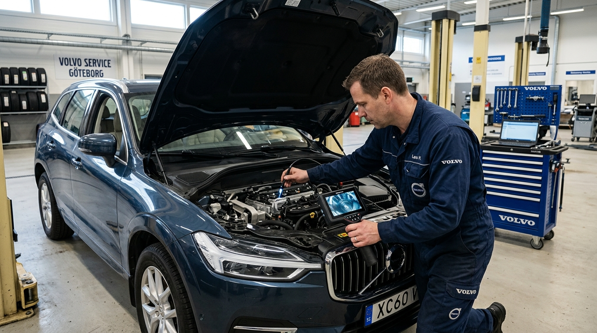
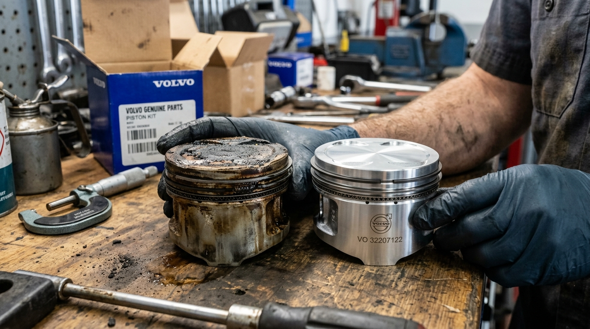
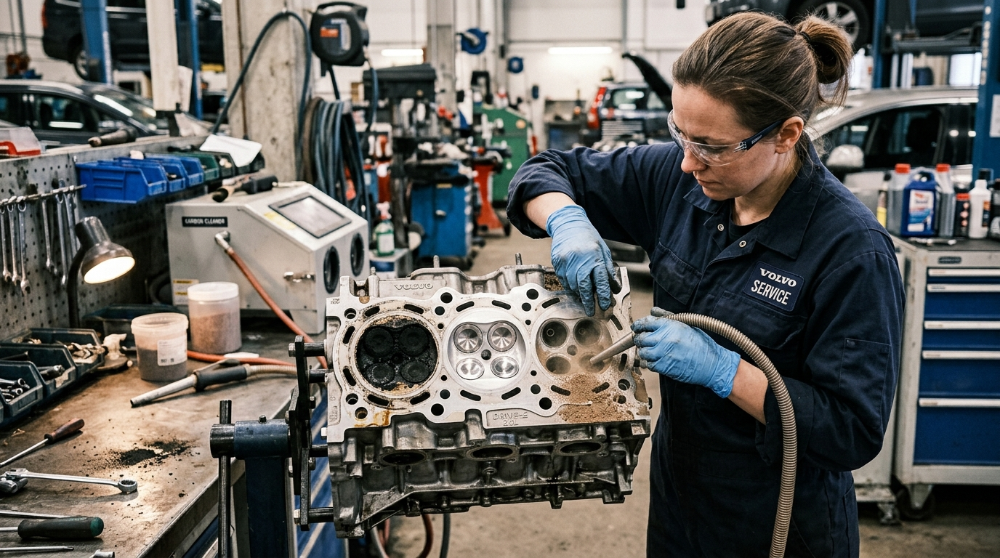

Устранение повышенного расхода масла на Volvo XC60 Drive-E (B4204 T5)

Жалоба владельца: расход масла 1 литр на 1 300 км
В наш техцентр обратился владелец кроссовера Volvo XC60 II поколения (мотор 2.0 T5 Drive-E, B4204T23) с пробегом 118 000 км. В последние полгода аппетит двигателя к маслу начал расти в геометрической прогрессии: расход достиг 1 литра на 1 200 – 1 400 км пути. Владелец возил в багажнике 4-литровую канистру и регулярно доливал масло по сигналу электронного щупа. При интенсивном разгоне с педалью в пол сзади появлялся сизый дым с запахом горелого масла.
Диагностика и видеоэндоскопия цилиндров
Чтобы точно определить источник расхода масла (турбина, сальники клапанов или кольца), мы выполнили пошаговую инструментальную диагностику:
- Осмотр турбокомпрессора: люфт крыльчатки в допуске, патрубки интеркулера сухие (турбина не кидает масло).
- Свечи зажигания: на резьбе и юбках свечей всех 4 цилиндров обнаружен плотный черный маслянистый нагар.
- Видеоэндоскопия артикуляционным зондом:
- Стенки цилиндров сохранили четкий заводской хон, задиров и глубоких царапин нет (блок в идеальном состоянии!).
- Днища всех поршней покрыты рыхлой коркой углеродистого нагара, а по краям огневого пояса отчетливо видны лужицы жидкого моторного масла.
В чем корень проблемы моторов Drive-E первой ревизии?
На двухлитровых моторах семейства VEA/Drive-E с завода устанавливались тонкие облегченные поршневые кольца с крошечными дренажными отверстиями диаметром менее 0.5 мм. При городском режиме езды с частыми пробками и увеличенным интервалом замены масла (15 000 – 20 000 км) дренажные канавки неизбежно закоксовываются.
Маслосъемные кольца теряют подвижность и «залипают». Излишки масла больше не отводятся в картер, а сгорают прямо в цилиндрах, создавая толстый теплоизоляционный слой нагара на поршнях и клапанах.
Выполненные работы по устранению масложора
- Демонтаж и дефектовка: аккуратное снятие ГБЦ и поддона картера, извлечение поршней с шатунами. Все маслосъемные кольца были наглухо закоксованы.
- Установка модернизированной поршневой группы: установлен оригинальный комплект поршней и колец новой ревизии
Volvo (арт. 32207122). В новой ревизии масляные отверстия увеличены в 2.5 раза, а конструкция маслосъемного кольца изменена на составную с повышенной упругостью. - Замена вкладышей и крепежа: установка новых оригинальных шатунных вкладышей и новых болтов шатунов.
- Очистка клапанов и ГБЦ технологией Walnut Blasting: мягкая струйная обработка мелкодисперсной скорлупой грецкого ореха. Все впускные каналы и клапаны очищены до блеска нового металла без микроповреждений седел.
- Замена сальников клапанов и уплотнений: установлены новые маслосъемные колпачки, сальники коленвала и оригинальная многослойная прокладка ГБЦ.
- Сборка по регламенту: затяжка болтов ГБЦ по заводской схеме с контролем доворотов по градусам.
- Заправка техническими жидкостями: свежий антифриз Volvo и синтетическое моторное масло с допуском
Volvo VCC RBS0-2AE 0W-20.
Результат ремонта
Двигатель работает идеально тихо и ровно. Компрессия во всех цилиндрах поднялась и выровнялась до эталонных 12.0 бар. Контрольный заезд через 3 000 км подтвердил: расход масла упал до абсолютного нуля (электронный щуп на максимуме, долив не требуется). Автомобиль вернул полную паспортную мощность 249 л.с. и экономичность, а клиент защищен нашей гарантией 12 месяцев.
Разборка/сборка ДВС, очистка ГБЦ, замена поршневой группы: 55 000 ₽
Оригинальные поршни новой ревизии, кольца, вкладыши, прокладки, масло 0W-20: 78 000 ₽
Итого под ключ: 133 000 ₽ (Полное устранение проблемы навсегда)

Слева — закоксованный поршень со сгоревшим маслом. Справа — новый оригинальный поршень Volvo новой ревизии

Очистка ГБЦ: слева — закоксованная камера сгорания, справа — идеальная чистота после чистки